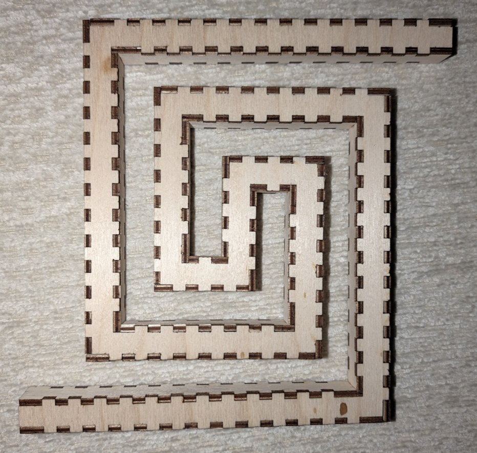

LaserMadeMusic
Musical instruments cut from 3mm Baltic birch plywood on a laser, and the cut files to build them. Everything here is millimetre-true at 1 user unit = 1mm, so a file prints and cuts at real size, and every part is a flat plate joined to other flat plates.
The cutting and the playing are on LaserMadeMusic.
The trumpet
One instrument type in many versions. Every version is a quarter-size trumpet on a 10 × 10mm square bore, with the same bell and the same mouthpiece; what changes from one to the next is the bore, the path the tube takes between them. All of it lives in one repository, trumpet-elbows-allowed.
Everything from here down to the kalimba is this one instrument: the two versions that are built, the bores you can turn, the parts on the ends, the one on the bench, and the bores designed but not yet cut.
Built
Two versions are finished in wood. The three-turn trumpet is the one that has been blown.
the three-turn trumpet — press-fit, shellacked and blown: 1096mm of bore in twelve sections, with the bell and the mouthpiece on it. It plays, and one of its notes is F4, measured.

the spiral bore — a metre swept along a flat coil, cut, press-fit and shellacked, with a bell in its port.

Turn the bores
Every version has a viewer you can drag to turn: a lattice of blocks for a bore written as a walk, a swept tube for one drawn along a curve. (GitHub strips iframes, so on this README each viewer is a link rather than a picture.)
the three-turn trumpet — 1096mm of bore in twelve sections, winding three whole turns, with a mouthpiece at one end and the 153mm bell at the other. It is press-fit, shellacked and blown, and one of its notes is F4, 349.2 Hz, measured. Its straight blocks run 30mm and its turns are 16mm cubes, which is where the length comes from.
the spiral bore — 1000mm of centreline in 19 facets of 45°, winding out from R34.7 to R112.9 between two flat cheeks. The only built bore that is not a lattice walk. Cut, press-fit and shellacked, with a bell in its port.
And the parts on the ends of them
A bore is only the tube. Both of these are stacks of laminated 3mm rings, and both turn the same way — the slider stacks them a ring at a time, which is the useful part.
The bell — 17 rings of 9mm, 153mm tall, a 10mm square throat opening to a ø86mm round rim. The section morphs square to round on the way up while holding area.
The mouthpiece — 30 rings of 3mm, 90mm tall, a 16mm square plate at the instrument and a ø23mm rim at the lip — ø17 where the lip actually sits — narrowing to a ø3.66mm throat before the backbore. Full size on a quarter-size instrument, which is the point of it. The one on the built three-turn trumpet is shorter, 24 rings and 72mm.
the bell and the mouthpiece has the generators that draw them, and both sheets listed with their sections and isometrics. Every bore is on the same 10mm channel, so one of each serves all of them.
On the bench
the greek spiral — the most recent bore to be cut, and not finished: a trumpet bore drawn as a flat meander, the Greek key wound in and brought back out beside itself. 68 blocks, 1088mm of 10 × 10mm bore in one section, because it never leaves its plane. It is in ply and press-fit; neither end is fitted yet.

Designed, not yet cut
More bores for the same trumpet. Every one of these has its cut files, and none has been on the laser yet.
the double spiral — the longest on this page at 1506mm, 42 facets of 30°. Two arms half a turn apart, their vertices sampled every facet off a smooth Archimedean spiral, r = R0 + b·θ from R62 and rising 46mm a turn, joined at the centre by an arc off R30 and a straight. Winding in and back out is what gets both ends to the rim: a coil that only winds in has to stop somewhere, and that somewhere is enclosed. 86 parts on two sheets, the cheek plate 237 × 244mm.
the double volute — 1180mm, the same skeleton on a different curve. Where the double spiral samples one smooth spiral, this is a chain of semicircles: the radius holds all the way across each arc and steps only at the joins, about two alternating centres whose midpoint is the eye. That is what separates the two, and neither can be turned into the other — one spiral about one centre, against circular arcs about two. Interleaving the return arm puts the openings 180.00° apart for nothing, because the two ends are one end and its own half-turn.
the three-lobe serpentine with collinear ends — a metre laid out long: three half-circles of R64 joined by straights, then a quarter turn to bring the ends opposed. 28 facets of 30°, 58 parts, and its cheek sheet is 572 × 251mm, which is most of the bed.
the ess — 836mm at 45° facets, a trough of R55 and a crest of R55, level at both ends. Nothing nests here: the straight riser between the lobes is structural, because where the curvature reverses at a single vertex the two offset walls cross.
the coil search worked through fourteen coiling walks. Four were promoted for winning a category outright or tying for one, each carrying the numbers that say how hard it coils and what it costs to build; the other ten are still in coil/search.
The other instruments
Each of these turns too, built from the same geometry as its cut files.
kalimba — a seven-sided body, finger-jointed, whose top face carries a seven-fold knot rosette.
square-bore flute — a five-hole pentatonic flute in A4, Native American style; the buttons swap between its builds, box or stack, and where its flue is cut.
lyre-harp — a seven-string frame, one closed duct between two cheeks, opening below the strings into its resonator. Its parts are cut, and it is not assembled yet.

slapstick — two long slats joined by a rope at one end; swing it and the free ends clap.
bullroarer — five blade profiles, each whirled on a cord; Spin it shows the turn about its own length that makes the roar. The convex tapered blade is cut, laminated twice.

buzz-disc — two discs, each threaded on a cord loop that winds and unwinds; Spin it shows the turn.
Everything, indexed
The instruments
| trumpet | One instrument type in many versions, all in one repository: a quarter-size trumpet on a 10 × 10mm square bore, each version a different path for the bore, with one bell and one mouthpiece for all of them. Every version is listed below |
| kalimba | A seven-sided kalimba body whose front carries a seven-fold knot rosette |
| slapstick | Two long slats joined at one end; swing it and the free ends clap |
| bullroarer | Five blade profiles for a bullroarer, whirled on a cord |
| buzz-disc | Two designs for a buzz disc, threaded on a cord loop that winds and unwinds |
| square-bore flute | A five-hole pentatonic flute in A4, Native American style, with a square bore in 3mm ply: four builds from one acoustic model, box or stack, each with its flue in the bird, in the nest or half in each, and the boxes finger-jointed or flat, carrying the 2017 flute's ideas |
| lyre-harp | A seven-string lyre-harp frame, 188 × 400mm: one closed duct between two cheeks, opening below the strings into its resonator |
The trumpet, version by version
Every row here belongs to the one trumpet above, and all of it is in trumpet-elbows-allowed. The first two are complete and built. The next three are bores that still need the bell and the mouthpiece fitted to them, and the last is those two ends themselves.
| the three-turn trumpet | The one that plays: 1096mm of 10 × 10mm bore coiling three whole turns, with the bell and the mouthpiece on it |
| the spiral bore | The other version in wood: a metre swept along a flat coil, 19 facets of 45°, cut, press-fit and shellacked, with a bell in its port |
| the switchback trumpet | A trumpet bore that folds back on itself twice, in six sections, at 10mm |
| the greek spiral | A trumpet bore drawn as a flat meander — the Greek key, wound in and brought back out beside itself, in one piece |
| the tight coil | The tightest trumpet coil that does not touch itself: 1040mm wound six times at 42.7mm a turn, cutting 16 elbows to get there |
| the bell and the mouthpiece | The bell and the mouthpiece, shared by every trumpet built on that channel |
The generators
Parts too fiddly to draw by hand, made by a script instead.
| the bore generator | Turns a bore written as a walk through a lattice of blocks into checked cut files |
| the design library | Every bore worked out so far, built into cut files — the corpus the generator regresses against. Elbows are allowed: a turn that cannot fold is cut as one rather than refused |
| the ribbon bore | Constant cross-section along any planar curve, with the walls faceted between two flat cheeks |
| the stretched lattice | Bores whose straight blocks run longer than their turns, so one walk gives 548mm where it gave 352 |
| spirals | Coiling bore walks that turn about an axis while advancing along it, with what each costs to build |
| knotwork-soundholes | Knotwork rosettes for an instrument sound hole, by leads and bights |
| living-hinge | Parametric lattice-hinge patterns, so a flat sheet will bend |
The tools
| lasermade-tools | The page builder and the shared checkers — what a writeup claims about itself, what a cut file claims about its colours, whether an image carries metadata — and the 3D viewers for the hand-drawn instruments |
Colour is the cut order
Shared by every repository here: blue engraves, then green → orange → cyan → black, with black always the cut that frees the part, and violet #8000ff meaning skip. A file uses only the stages it needs.
The one deliberate exception is test-ladder.py, where colour carries cut speed rather than order — because splitting an import into layers by colour is the only place a laser importer will let a separate speed live.
This page is README.md rendered by md2html.py into index.html and committed, not built on the server, so it goes stale silently unless it is regenerated after every edit.
Released under CC0 1.0.